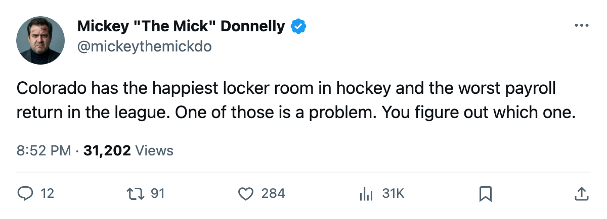
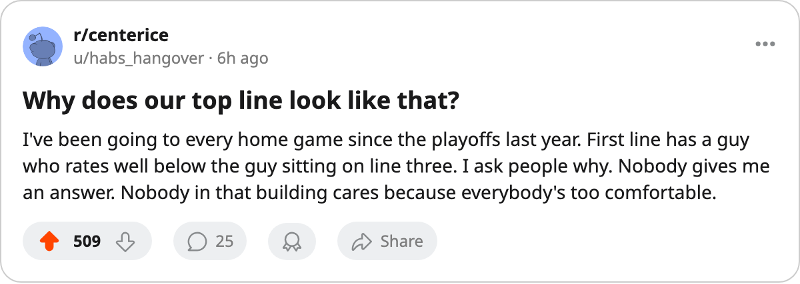

YOUR $68.11M BUYS A 75 ON THE 3RD LINE AND A 64 ON THE TOP
Colorado pays the third-most in the league, gets the worst return per point, and has the happiest locker room in hockey. That last one is the problem.
 Mickey "The Mick" DonnellyColumnist, ex-goalie · The Penalty Box
Mickey "The Mick" DonnellyColumnist, ex-goalie · The Penalty Box
 Colorado Avalanche sits third-highest on the payroll sheet at $68.11M and dead last on the return at $34.05M a point. Two games, 2 points, and the worst value in a 30-team league.
Colorado Avalanche sits third-highest on the payroll sheet at $68.11M and dead last on the return at $34.05M a point. Two games, 2 points, and the worst value in a 30-team league.
The Morale Scale has that room at 97.4, the highest in hockey. A building at 97.4 sitting on 2 points after two games means the men in it are fine. Comfortably and expensively fine. They walk in, they collect from the third-highest payroll in this league, and they skate a card where the 64 gets the first shift and the 75 gets the third.
 Jim McKenzie58, rated 64, skates the top line.
Jim McKenzie58, rated 64, skates the top line.  Jordan Krestanovich68, rated 75, skates the third. He should be on the top two units. He is on the third because the room has stopped pushing and the coach has stopped pushing back.
Jordan Krestanovich68, rated 75, skates the third. He should be on the top two units. He is on the third because the room has stopped pushing and the coach has stopped pushing back.
The math on comfort
Three clubs under $52M have 4 points already:  Nashville Predators at $51.38M on $12.85M a point,
Nashville Predators at $51.38M on $12.85M a point,  Pittsburgh Penguins at $48.92M on $12.23M a point,
Pittsburgh Penguins at $48.92M on $12.23M a point,  Los Angeles Kings at $50.80M on $12.70M a point. Colorado pays more than all three and has half the points.
Los Angeles Kings at $50.80M on $12.70M a point. Colorado pays more than all three and has half the points.
Tony Granato won the Jack Adams last season. The trophy rewards whoever squeezes the most from the least. This year, with $68.11M at his disposal, the squeeze is gone. The Bureau's Development Index has no riser from that building this edition. Nobody is pulling himself up. Nobody is angry enough to force the issue.
Doug Reimer's spreadsheet probably loves that 97.4. Reimer sees a number going up and calls it progress. I see a room where your 75 sits behind your 64 and nobody kicks a door open about it.
$82 buys you a seat to watch Colorado this season. You are paying the league's third-highest payroll to see a top line built around a 64. The room is happy. The lineup card is the coach's confession.

